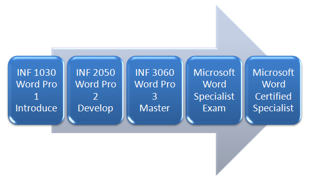

Graphics and illustrations draw your audience into your work, helping them to understand and remember important facts. SmartArt graphics in Microsoft Office 2007 allow you to focus readers’ attention on your ideas and information by directing their eyes to your visually appealing, professional-looking graphics.
Go to the Instructional Videos and watch “SmartArt” to learn how to create simple yet effective SmartArt graphics, like this pathway to becoming Microsoft Word Certified, to express your ideas and intrigue your audience.

Microsoft product screen shot(s) reprinted with permission from Microsoft Corporation.
Take some time to experiment with and explore SmartArt graphics, and open your mind to their possible uses in all of your documents. Be sure to check your Help menu for more tips and demonstrations on how to use SmartArt graphics.